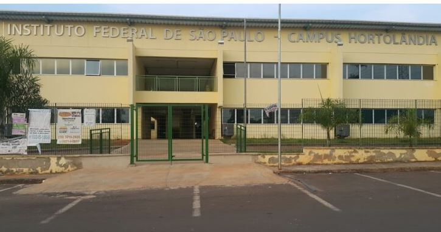

Sobre o Projeto
Esse é o projeto final da disciplina de desenvolvimento web, ministrada pela professora Daiane Tomazetti, no Instituto Federal Câmpus Hortolândia. O projeto é um site explicando o que são direitos humanos e qual é sua importância para a sociedade. O site inclui algumas ferramentas de acessibilidade, como o VLibras, para pessoas mudas, e ferramentas para aumentar a fonte e o contraste do contéudo do site. Foi utilizado HTML, CSS e JavaScript para a realização desse trabalho.
